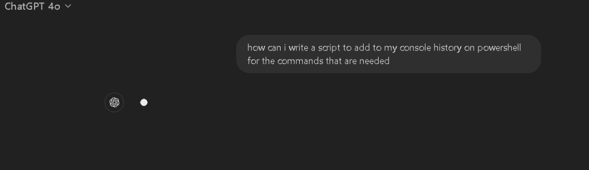
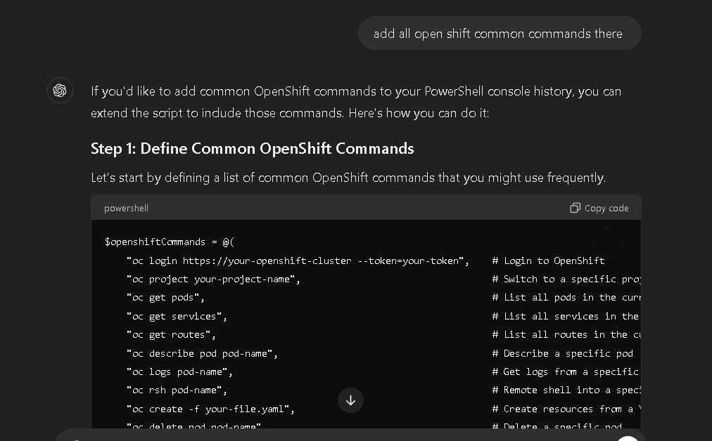
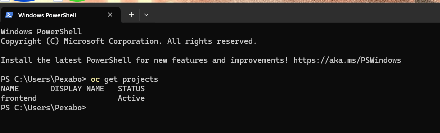
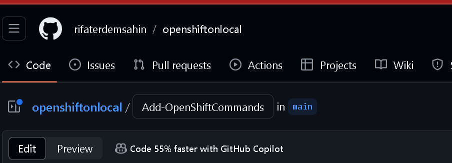
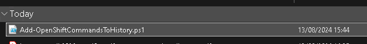
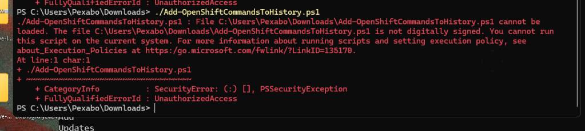
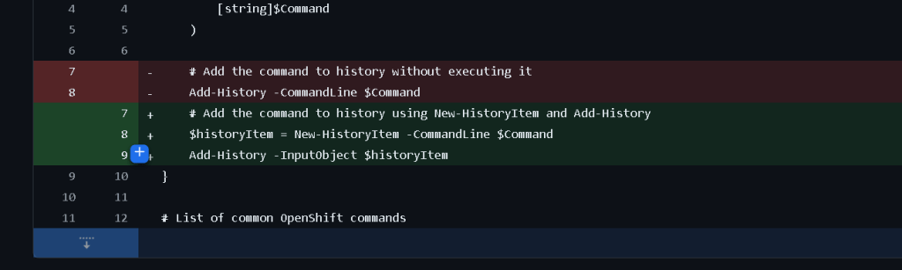

Script History Create

To write a script that adds specific commands to your PowerShell console history, you'll need to create a function that manually appends commands to the history. PowerShell maintains a history of commands that you've executed, and you can interact with this history using the Add-History cmdlet or by directly manipulating the history objects.
Here’s a step-by-step guide to creating such a script:
Step 1: Create the Function
You can create a PowerShell function that takes a command as a parameter and adds it to the console history.
function Add-ToHistory {
param (
[string]$Command
)
# Execute the command (optional)
Invoke-Expression $Command
# Add the command to history
Add-History -CommandLine $Command
}
Example usage:
Add-ToHistory -Command "Get-Process"
Step 2: Saving the Function in Your Profile
If you want this function to be available in every PowerShell session, you can save it to your PowerShell profile.
- Open your PowerShell profile by executing:
notepad $PROFILE
-
Add the
Add-ToHistoryfunction script to your profile file. -
Save and close the file. Now, every time you open a new PowerShell session, the function will be available.
Step 3: Using the Function
Whenever you want to add a command to your console history, use the Add-ToHistory function.
Add-ToHistory -Command "Get-Process"
Add-ToHistory -Command "Set-ExecutionPolicy RemoteSigned"
Step 4: Automating History Addition for Specific Commands
If you want to automate the process of adding specific commands to history without manually calling the function each time, you can create an alias or modify your profile to execute specific commands with history tracking:
Set-Alias -Name gp -Value { Add-ToHistory -Command "Get-Process"; Get-Process }
This alias will run the Get-Process command and automatically add it to your history.
Step 5: Script to Add Multiple Commands
If you want to add multiple specific commands to the history at once, you can create a script like this:
$commands = @(
"Get-Process",
"Set-ExecutionPolicy RemoteSigned",
"Get-Service"
)
foreach ($cmd in $commands) {
Add-ToHistory -Command $cmd
}
Final Notes
-
Persistent History: Ensure that the
$MaximumHistoryCountsetting in your PowerShell is set appropriately if you want to maintain a long history. -
PowerShell Version: The
Add-Historycmdlet is available in PowerShell 5.0 and later. If you're using an older version, consider updating or managing history differently.
This approach allows you to selectively add commands to your PowerShell history, which can be particularly useful for logging important commands or for ensuring that critical steps are recorded.
Asking to add open shift commands

If you'd like to add common OpenShift commands to your PowerShell console history, you can extend the script to include those commands. Here's how you can do it:
Step 1: Define Common OpenShift Commands
Let's start by defining a list of common OpenShift commands that you might use frequently.
$openshiftCommands = @(
"oc login https://your-openshift-cluster --token=your-token", # Login to OpenShift
"oc project your-project-name", # Switch to a specific project
"oc get pods", # List all pods in the current project
"oc get services", # List all services in the current project
"oc get routes", # List all routes in the current project
"oc describe pod pod-name", # Describe a specific pod
"oc logs pod-name", # Get logs from a specific pod
"oc rsh pod-name", # Remote shell into a specific pod
"oc create -f your-file.yaml", # Create resources from a YAML file
"oc delete pod pod-name", # Delete a specific pod
"oc scale --replicas=3 deployment/deployment-name", # Scale a deployment
"oc rollout restart deployment/deployment-name", # Restart a deployment
"oc rollout status deployment/deployment-name", # Check the status of a rollout
"oc expose svc/service-name", # Expose a service to create a route
"oc apply -f your-file.yaml", # Apply a configuration from a YAML file
"oc delete -f your-file.yaml" # Delete resources defined in a YAML file
)
Step 2: Add Commands to History
Now, you can iterate over the list of commands and add them to your PowerShell history using the Add-ToHistory function defined earlier.
function Add-ToHistory {
param (
[string]$Command
)
# Add the command to history without executing it
Add-History -CommandLine $Command
}
Iterate over the OpenShift commands and add them to history
foreach ($cmd in $openshiftCommands) {
Add-ToHistory -Command $cmd
}
Write-Host "OpenShift commands have been added to your PowerShell history."
Step 3: Save and Run the Script
-
Save this script to a
.ps1file, for example,Add-OpenShiftCommandsToHistory.ps1. -
Run the script in your PowerShell session to add the commands to your history.
.\Add-OpenShiftCommandsToHistory.ps1
Step 4: Check Your History
You can check your PowerShell history to confirm that the commands have been added:
Get-History
Step 5: Automating for Every Session
If you want these commands to be added to your history every time you open a PowerShell session, you can add the script or the list of commands directly to your PowerShell profile.
notepad $PROFILE
Then, paste the script content or the loop that adds commands to history into the profile file and save it.
Final Considerations
-
Ensure you replace placeholders like
your-openshift-cluster,your-project-name,pod-name,deployment-name, andyour-file.yamlwith actual values relevant to your environment. -
This setup helps you quickly recall commonly used OpenShift commands by accessing your command history.
With this approach, you can easily keep track of important OpenShift commands in your PowerShell history and have them ready for quick access.
From project to another that would help


copy path and execute



https://github.com/rifaterdemsahin/openshiftonlocal/commit/a937ae70824e7ec9a2b87be3e0e40bc2d8b43266
Good idea bad execution it did not work >>> maybe it should be done with autohotkey
Premise : have a system ready with the history
Imported from rifaterdemsahin.com · 2025